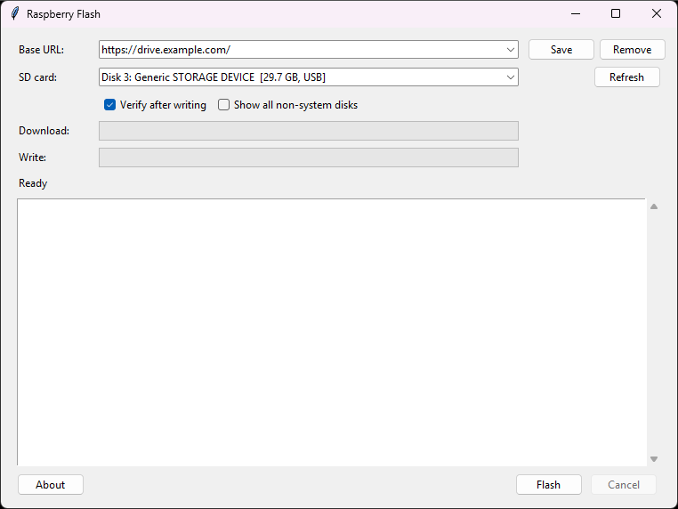
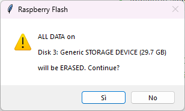
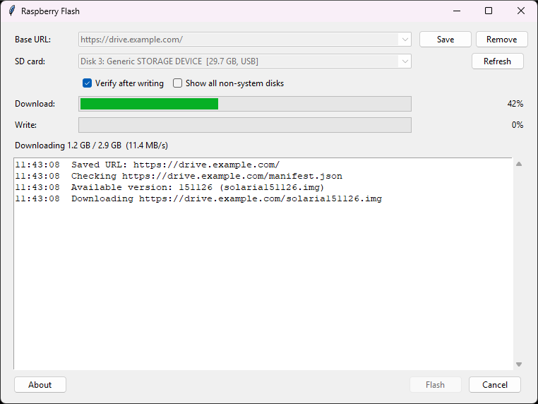
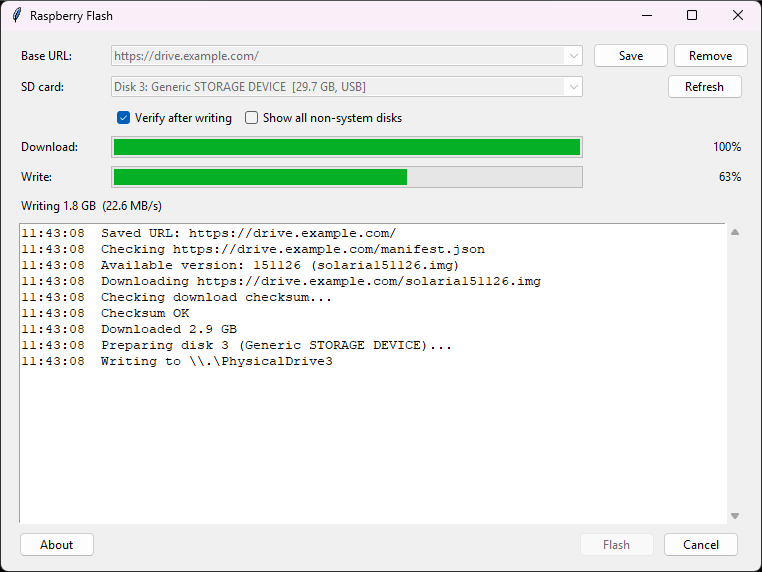
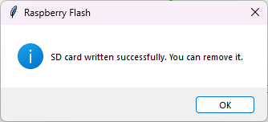
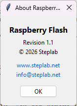
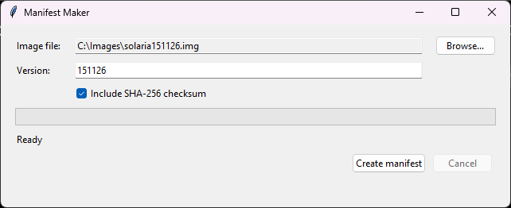
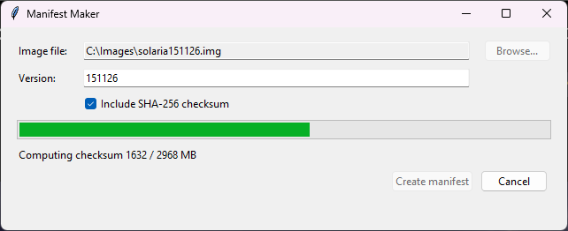
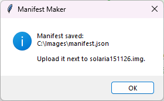

Writing Raspberry Pi SD cards on Windows · RaspberryFlash 1.1 · ManifestMaker 1.0
Raspberry Flash writes a Raspberry Pi image to an SD card on Windows, always taking the latest image published on your web server. Manifest Maker is the companion tool used to publish a new image.
| Program | Who uses it | What it does |
|---|---|---|
| RaspberryFlash.exe | Anyone preparing SD cards | Downloads the current image and writes it to the card |
| ManifestMaker.exe | Whoever publishes images | Creates the manifest.json that says which image is current |
No installation is needed: copy the .exe to a folder of your choice and run it. Pick a folder where you can write files (e.g. Documents\RaspberryFlash), because the program stores its settings and downloaded images next to itself.
The web server holds the image and a small file named manifest.json in the same folder:
https://drive.example.com/
├── manifest.json
└── solaria231026.imgmanifest.json tells Raspberry Flash which image is current:
{
"version": "231026",
"image": "solaria231026.img",
"sha256": "3f5a…"
}When you press Flash, Raspberry Flash:
manifest.json from the base URL you entered;cache folder;So the person writing cards only needs to know the server address: when a new image is published, it is picked up automatically.
The main window contains, from top to bottom:

manifest.json, for example https://drive.example.com/.Disk 3: Generic STORAGE DEVICE [29.7 GB, USB]. If the card is not listed, press Refresh.
Check the size: it must match your SD card. If in doubt, remove the card, press Refresh, and see which entry disappears.

Everything on the selected card is erased. This cannot be undone.



To stop at any moment, press Cancel. A cancelled download resumes next time; a cancelled write leaves the card unusable until it is written again.
After writing, Windows may show “You need to format the disk before you can use it”. This is normal: Raspberry Pi uses partitions Windows cannot read. Press Cancel – do not format.
.img, .img.xz, .img.gz, .img.bz2 or .zip. Compressed images are decompressed while writing; there is no need to unpack them first.
This section is for whoever maintains the image on the server.
solaria151126.img, and upload it to the server folder.
Raspberry Flash recognises images by file name only. If you upload a changed image under an old name, PCs that already have that name in their cache keep using the old copy.

solaria151126.img → 151126). Change it if needed; it is only shown in the log.
manifest.json.
manifest.json to the same server folder, replacing the old one.From the next press of Flash, every Raspberry Flash using that base URL downloads the new image automatically.
The image in the manifest can also be in another folder or on another server: "image" may contain a full URL instead of a file name.
| File / folder | Contents |
|---|---|
cache\ | Downloaded images. Delete old images to free space; they are downloaded again if needed. |
cache\*.part, *.part.json | An unfinished download. Pressing Flash resumes it. |
config.json | Settings: last URL, saved URLs, verify option. Delete it to reset the program. |
| Message / problem | Cause and solution |
|---|---|
| Administrator rights are required to write to the SD card. | The Windows prompt was refused. Restart the program and answer Yes; on company PCs you may need an administrator account. |
| No SD card found. Insert one and press Refresh. | Insert the card, wait a few seconds, press Refresh. If the reader is internal, try Show all non-system disks. |
| Please enter a valid http(s) URL. | The address must start with http:// or https://. |
| Cannot read manifest.json: HTTP 404 … | Wrong base URL, or manifest.json has not been uploaded to that folder. Open the address followed by manifest.json in a browser to check. |
| Cannot read manifest.json: … (no HTTP code) | No connection to the server: check the internet connection, proxy or firewall. |
| manifest.json is not valid JSON / has no "image" entry | The manifest is damaged or hand-edited incorrectly. Recreate it with Manifest Maker. |
| Download failed: HTTP 404 … | The manifest names an image that is not on the server. Upload the image or fix the manifest. |
| Connection problem …; retrying in 5s | Temporary network fault; the program retries by itself. If it gives up, press Flash again: the download resumes where it stopped. |
| Downloaded image is corrupted (checksum mismatch). | The download was damaged and has been deleted; press Flash to download again. If it happens every time, the manifest was probably made from a different file than the one on the server – recreate it. |
| Image (…) is larger than the card (…) | Use a larger SD card. |
| diskpart failed | The card is write-protected (check the small lock switch on the side of the card or adapter), or another program is using it. Close Explorer windows on the card and try again. |
| Verification failed … | The card did not store the data correctly. Try again; if it fails again, the card or the reader is faulty – replace it. |
| An old image is still being written | The new image was uploaded with an old file name. Rename it, recreate the manifest, and upload both. Or delete the image from the cache folder. |
| Windows asks to format the card after writing | Normal – press Cancel, do not format. |
The log in the main window shows every step with the time; it is useful to copy it when asking for help.
manifest.json needs a connection. Without one, enter a direct link to the image instead: if a file with that name is already in the cache, it is used without downloading.manifest.json for the earlier image (which must still be on the server) and upload it.